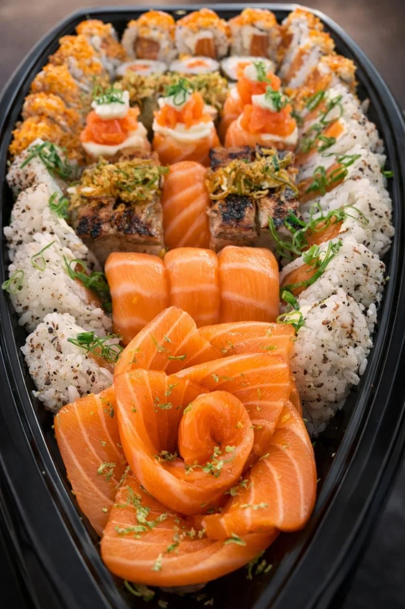
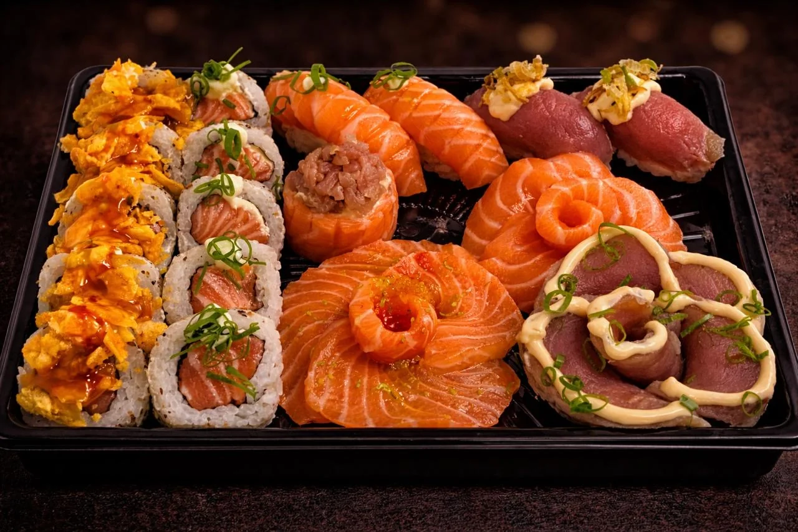
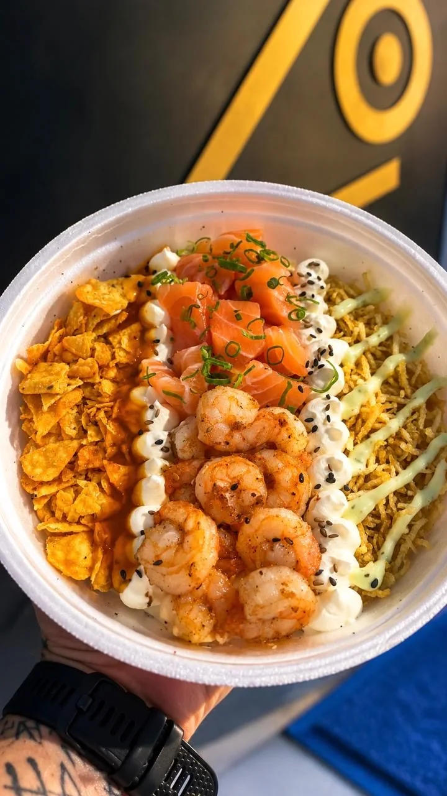
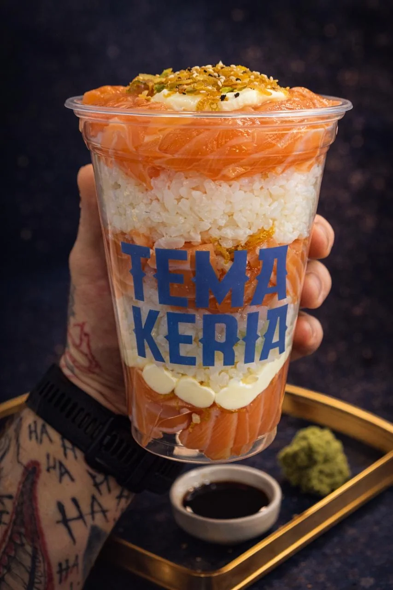
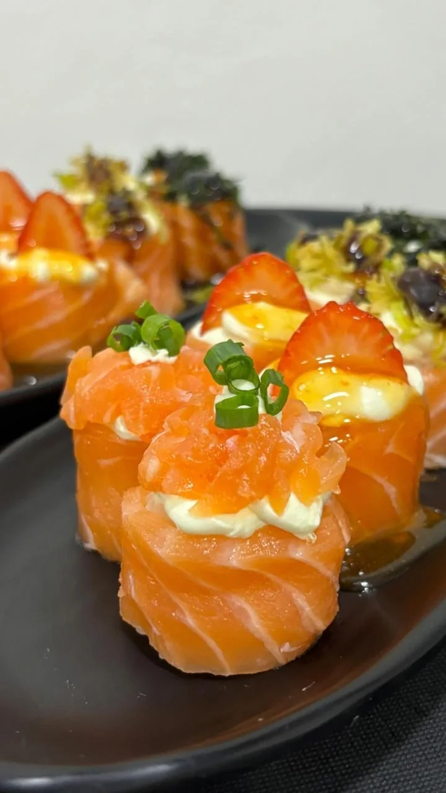
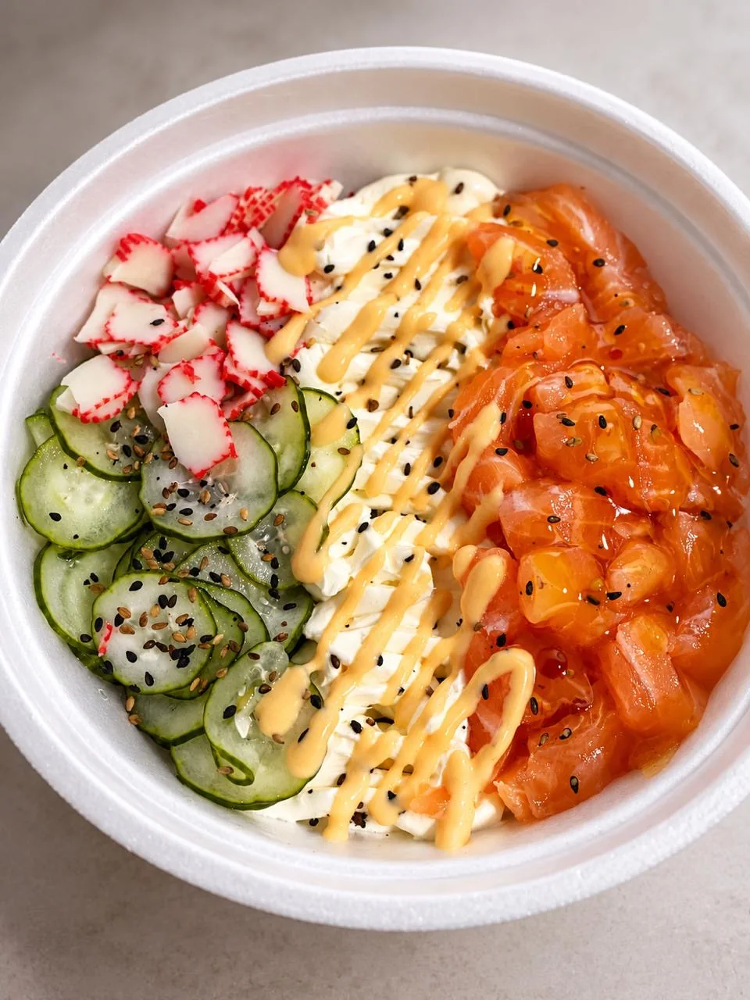
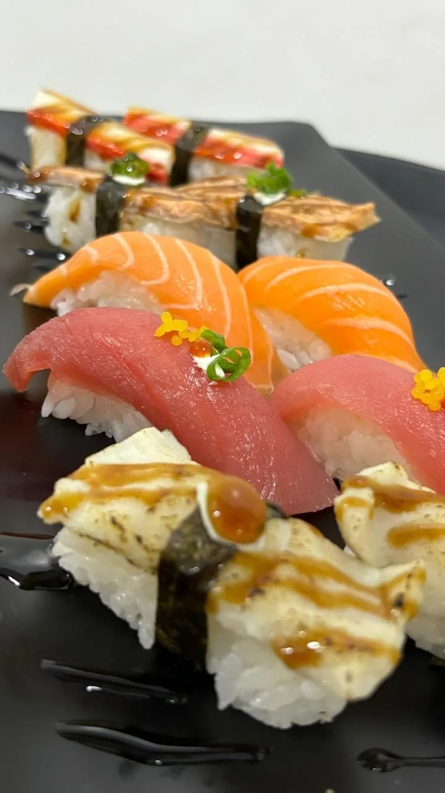
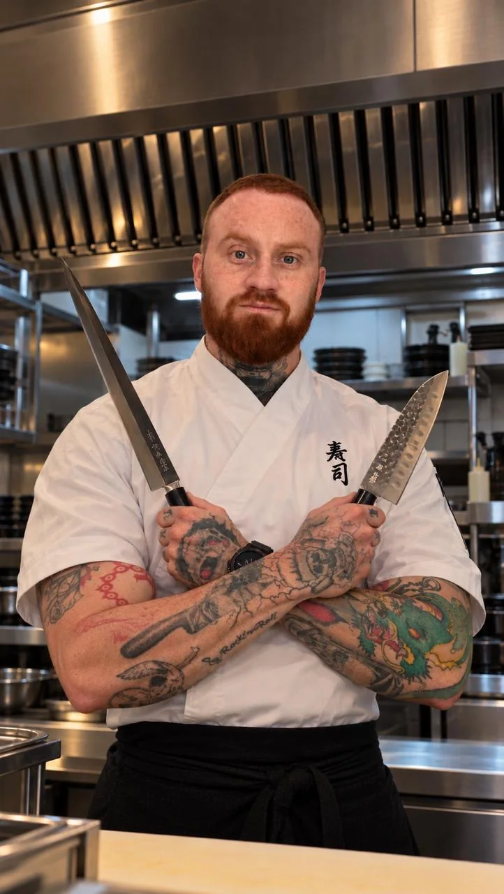

Clássicos
Combinados tradicionais
Uma seleção de clássicos da culinária japonesa, reunindo diferentes cortes e preparações que valorizam a tradição em cada peça.

Dos clássicos japoneses às criações autorais, descubra combinações que surpreendem no sabor, na textura e na apresentação.
Seleções preparadas para diferentes momentos — da tradição às combinações criativas.

Uma seleção de clássicos da culinária japonesa, reunindo diferentes cortes e preparações que valorizam a tradição em cada peça.
Criações que exploram texturas, combinações e apresentações especiais para quem busca uma experiência diferenciada.

Inspirados na gastronomia havaiana, combinam proteínas, vegetais, acompanhamentos crocantes e molhos cheios de sabor.

Arroz, salmão e acompanhamentos em uma apresentação prática e criativa. Uma forma especial de saborear a culinária japonesa.
Explore os sabores ↗



Chef de Sushi · Gastronomia Japonesa
Com aproximadamente 11 anos de experiência na gastronomia, o chef Igor Mulazzani Dias construiu sua trajetória em diferentes estabelecimentos da Serra Gaúcha e, desde 2020, em Santiago, Rio Grande do Sul.
À frente da Temakeria, une técnica, criatividade e dedicação no preparo e na apresentação de cada prato, sempre valorizando a qualidade da gastronomia japonesa.
Nossa missão é transformar cada pedido em uma experiência de sabor, qualidade e cuidado.
Descubra as especialidades e acompanhe as novidades da Temakeria.
Instagram, WhatsApp, endereço e horários aguardam confirmação.